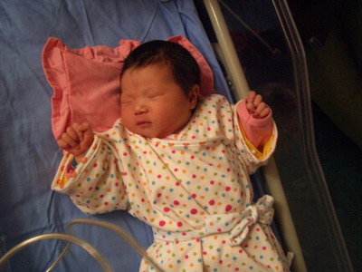
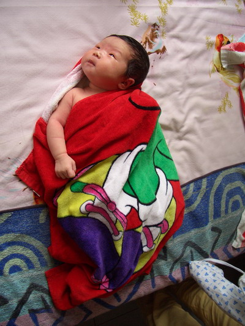
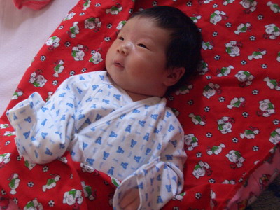

宝宝出生不到两个小时，护士把宝宝抱到妈妈身上，宝宝立刻趴到妈妈的乳房上有力吮吸起来，使妈妈第一次体验到作母亲的感觉。
宝宝哭声极其嘹亮，出生第二天晚上就用哭声把隔了五个房间的护士给招了过来。
宝宝出生时就有一头又长又黑的头发。

宝宝出生时体重7斤，身长50公分。满月时体重已经有9斤2两了。
宝宝出生时脑门正中有一道十分明显的红印，两只眼睛的眼皮上各有一个红点，把爸爸妈妈吓了一跳。医生说是毛细血管瘤，以后会自行消退。满月时这道红印已经淡了许多。
宝宝还没出院的时候就已经可以定定的看着一个人的脸，并且目光能随人移动。
宝宝出生后睡觉总喜欢把头仰起来，仰的厉害的时候可以与身体成90度，也许她在妈妈肚子里就是这个姿势，所以生不出来。

宝宝还没满月的时候，就已经可以趴在妈妈的身上抬头了。
宝宝在月子里已经可以发出“哎……”“啊不……”“啊呜……”的发音，并且可以和妈妈一唱一答的对话。
宝宝第一个月对音乐和床头音乐铃还不感兴趣，听的时候没有什么反应。
宝宝在第一个月里常常会笑，开始只是睡着的时候会露出笑容，快满月的时候可以看着逗她的人，突然就笑开了。

宝宝在第二十九天的时候第一次拉肚子，晚上拉了五次，使得第二天的乙肝疫苗推迟了几天才打。但是第二天就自动好了。
宝宝的笨爸爸妈妈在快满月时才给宝宝取好名字，叫郭欣怡，小名曼曼。宝宝的曾用名包括：郭敏、郭玥、郭采微、郭若沅、郭可宜、郭曼颖，小名曾想过用晶晶。
宝宝的小手手指细长，见的人都说是弹钢琴的手。